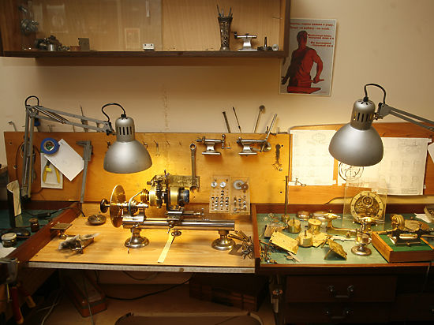
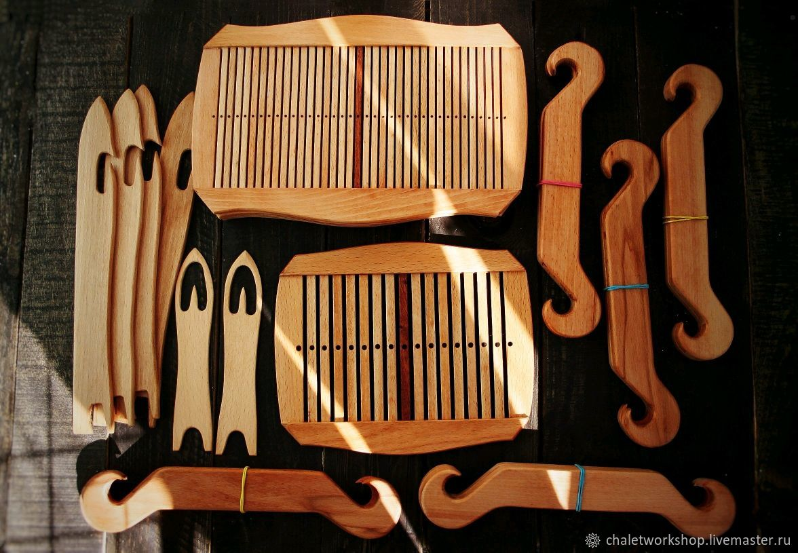
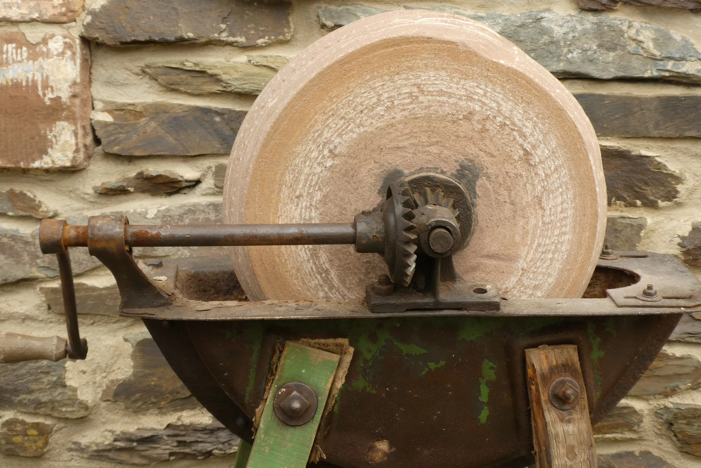
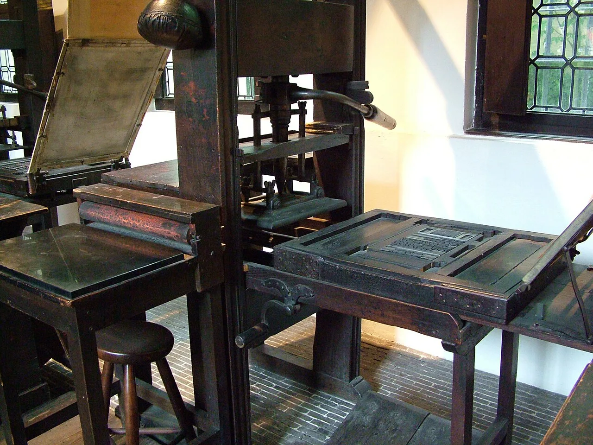

Пространство, где рождается ремесло
Пространство, где рождается ремесло

Швейцария, 1947 г.
Ручные тиски для фиксации мелких деталей часов
Ручная работа, 1920-е
Коллекция старинных инструментов для работы с деревом
Япония, 1960 г.
Натуральный камень для заточки инструментов
Германия, 1890 г.
Ручной станок для печати на бумаге